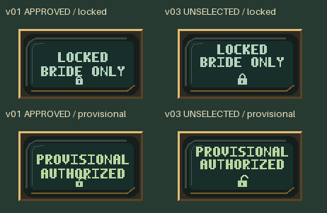
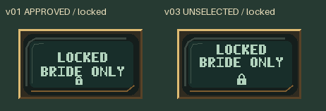
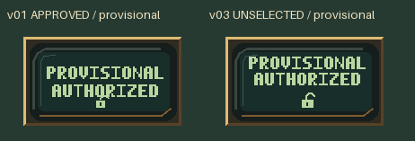
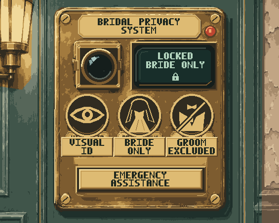
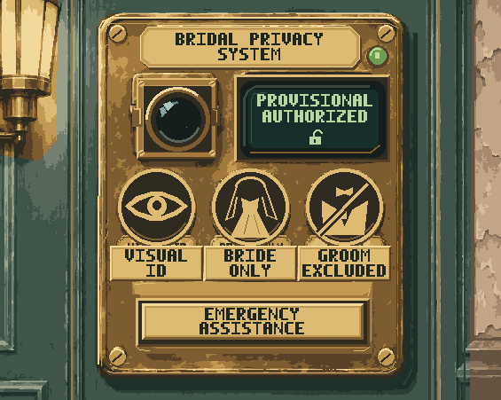
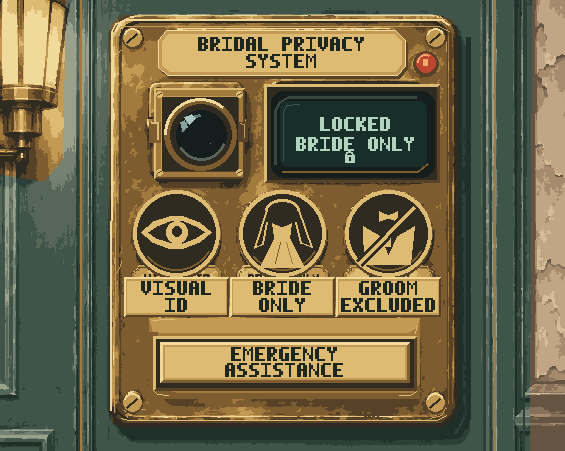
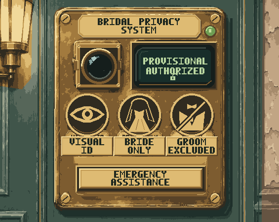
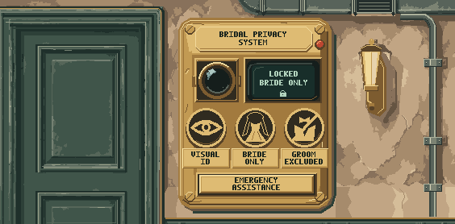
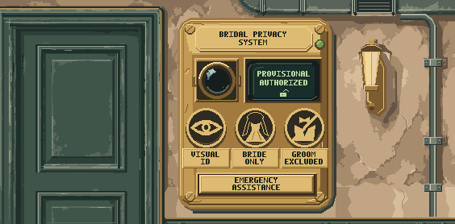

Native / exact4× close-up comparisonsBoth states · approved v01 / unselected v03Native 1×Exact 4×Native PNG4× PNGLocked close-up · before / afterNative 1×Exact 4×Native PNG4× PNGProvisional close-up · before / afterNative 1×Exact 4×Native PNG4× PNG
v03 locked INSPECT · 565×451 · UNSELECTEDNew locked INSPECT · UNSELECTEDNative 1×Exact 4×Native PNG4× PNG
v03 provisional INSPECT · 565×451 · UNSELECTEDNew provisional INSPECT · UNSELECTEDNative 1×Exact 4×Native PNG4× PNG
Approved v01 sources and Chapter2 reference · unchanged bytesApproved v01 locked INSPECT · unchangedNative 1×Exact 4×Native PNG4× PNGApproved v01 provisional INSPECT · unchangedNative 1×Exact 4×Native PNG4× PNGApproved Chapter2 Focus · unchangedNative 1×Exact 4×Native PNG4× PNG
Newly approved widescreen v02 · unchanged bytesApproved v02 locked Focus · protectedNative 1×Exact 4×Native PNG4× PNGApproved v02 provisional Focus · protectedNative 1×Exact 4×Native PNG4× PNG